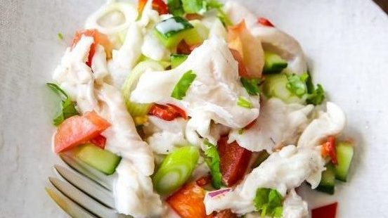
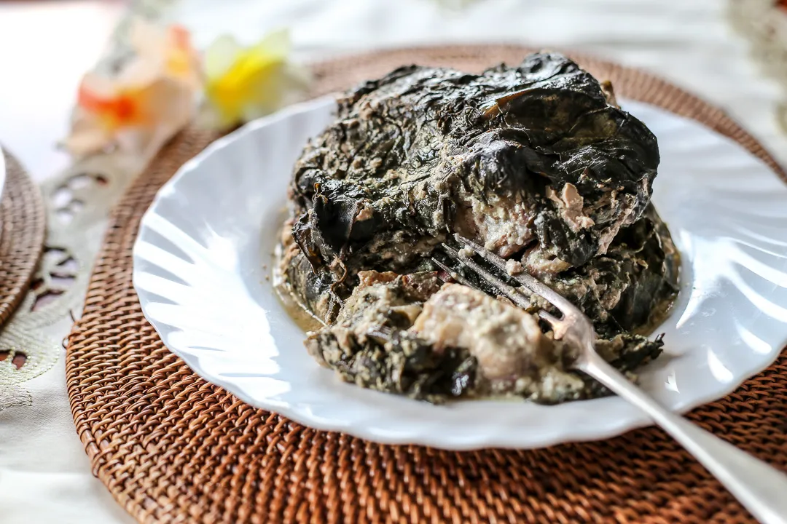
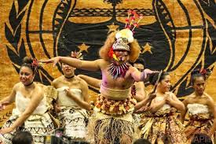

Samoa, a Polynesian paradise in the South Pacific, is renowned for its vibrant culture, stunning landscapes, and warm hospitality. The Samoan flag, featuring a red field with a blue canton adorned with five white stars, symbolizes the nation's pride and heritage. The stars represent the constellation of the Southern Cross, a prominent feature in the southern hemisphere's night sky, guiding Samoans both literally and metaphorically.
🍽️ Traditional Samoan Cuisine
Oka I'a (Raw Fish Salad)

Palusami

Palusami consists of young taro leaves filled with coconut cream and sometimes fish or meat, then wrapped and baked. It's a rich and creamy dish, often prepared in the traditional Samoan earth oven, the umu, enhancing its flavors.
Fa’ausi

Fa’ausi is a delightful dessert made by soaking slices of sweet coconut bread (fa’apapa) in a sweet coconut caramel sauce. It's a beloved treat, especially during festive occasions, offering a sweet end to a traditional Samoan meal.
💃 Samoan Dance: The Taualuga

The Taualuga is the pinnacle of Samoan dance, performed solo to showcase grace and storytelling through movement. Accompanied by choral music and simple percussion, the dancer's subtle gestures convey deep cultural narratives. Traditionally, the performance concludes with the audience honoring the dancer by placing money on the floor or directly on the dancer, a practice known as "lafo," symbolizing respect and appreciation.
Dry: Uce Gang

Uce Gang, a proud Samoan content creator, uses his platform to celebrate and support Samoan culture by sharing authentic stories, humor, and everyday experiences of Samoan life. Through his relatable skits and videos, he highlights the importance of family, community, and cultural pride, helping to uplift and promote Samoa’s rich heritage to a wider audience. By embracing his roots and showcasing them positively, Uce Gang fosters greater understanding and appreciation for Samoa within both the Pacific Islander community and beyond.